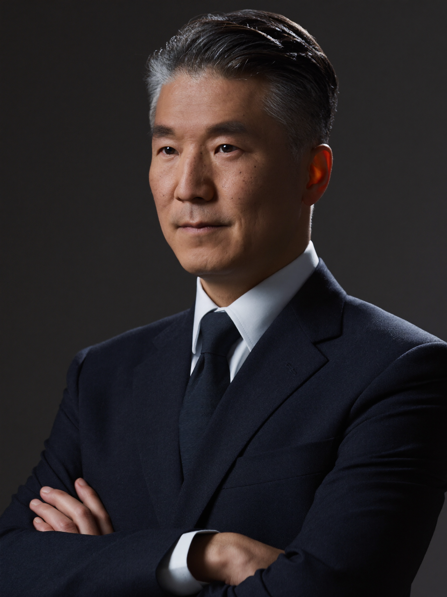
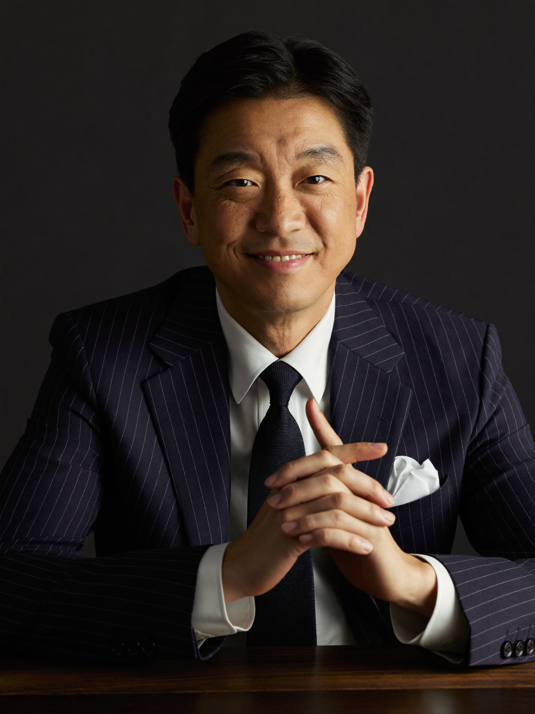
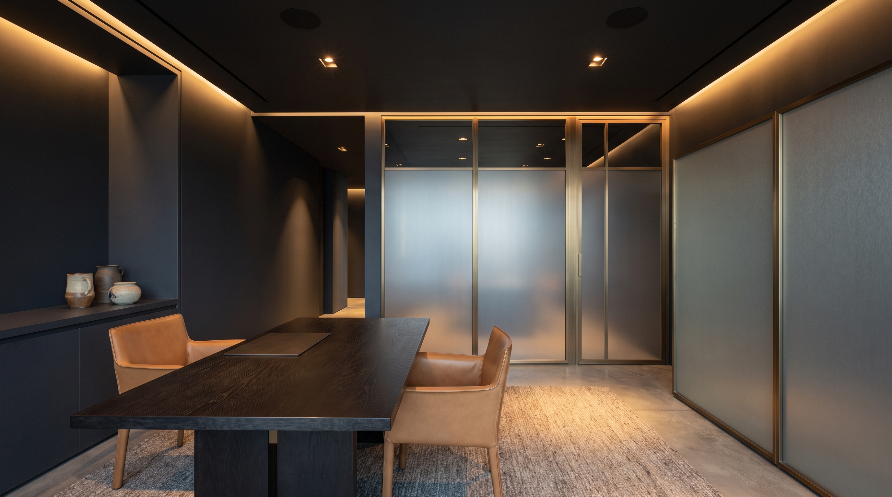
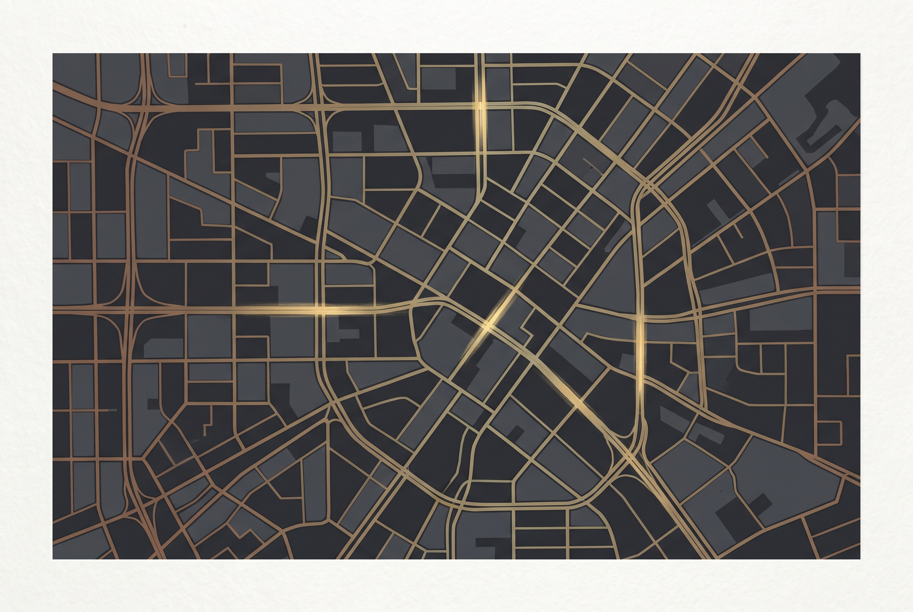

CEO
정도민간조사가 걸어온 길, 그리고 진실을 좇는 사람들을 소개합니다.

정도민간조사를 찾아주신 여러분께 감사드립니다. 저희는 “정도(正道)”라는 이름처럼, 의뢰인의 불안과 의문을 법과 원칙 안에서 정확하게 규명하는 것을 최우선 가치로 삼고 있습니다. 모든 조사는 개인정보보호법과 관련 법령을 준수하는 범위 안에서만 진행됩니다.
기업 리스크 진단부터 실종자 소재 파악, 디지털포렌식까지 — 축적된 조사 역량과 체계적인 보고 프로세스로 의뢰인이 신뢰할 수 있는 결과를 전달하겠습니다. 정도민간조사는 앞으로도 ‘찾아드립니다, 밝혀드립니다, 지켜드립니다’라는 약속을 지켜나가겠습니다.

저희는 상담부터 조사 실행, 보고, 그리고 정보 폐기에 이르는 모든 단계를 표준화된 절차로 관리합니다. 조사 과정에서 수집된 자료는 목적 달성 후 관련 법령이 정한 절차에 따라 즉시 파기하며, 의뢰인의 개인정보와 사건 정보는 철저히 비밀로 유지합니다.
불법 도청·미행·사생활 침해가 아닌, 공개된 정보와 적법한 조사 기법에 기반한 ‘사실관계 확인’이 정도민간조사가 지키는 원칙입니다.
민간조사원 실무교육 이수증
No. JD-2023-0142
개인정보보호관리사 인증
No. JD-2021-0087
디지털포렌식 전문가과정 수료증
No. JD-2022-0311
탐정업 직업윤리 교육 이수증
No. JD-2020-0055
산업보안관리사 자격
No. JD-2023-0199
국제조사네트워크 회원증
No. JD-2019-0028
기업리스크분석 전문가과정
No. JD-2022-0410
법률사실조사 실무자격
No. JD-2021-0233
보안탐지장비 운용 교육 이수증
No. JD-2020-0176
개인정보·정보공개 법제 교육
No. JD-2023-0068
위기관리 커뮤니케이션 과정
No. JD-2019-0144
조사윤리·인권 교육 이수증
No. JD-2022-0092
서울 강남에서 소규모 개인 조사사무소로 첫걸음을 시작했습니다.
디지털 증거 분석 전담팀을 신설하며 조사 영역을 확장했습니다.
개인사무소에서 법인 체제로 전환하며 조직적인 조사 체계를 갖췄습니다.
“정도(正道)”라는 이름으로 리브랜딩하며 원칙 중심 조사 철학을 재정립했습니다.
현재의 정도민간조사(JEONGDO Private Investigation) 법인 체제로 새롭게 출범했습니다.

서울특별시 강남구 테헤란로 000, 00층
1600-0000 · 평일 09:00–18:00
방문 상담은 사전 예약제로 운영합니다.

정도민간조사주소서울특별시 강남구 테헤란로 000, 00층
전화1600-0000
대중교통2호선 강남역 3번 출구 도보 5분 (가상 안내)
주차건물 내 방문객 주차 30분 무료 지원